alluvial tutorial: how modules change#
This tutorial draws alluvial diagrams of Infomap partitions with
alluvial. It covers how to:
compare the partitions of several Infomap runs,
choose a colouring,
show sub-modules,
highlight groups of nodes, with a legend,
draw state networks (multilayer and memory networks),
read Infomap output files,
make a multi-panel figure for a paper and save it as PDF, and
restyle single artists.
You need pip install "alluvial[infomap]". Every network is built in the notebook and every Infomap run is
seeded, so the figures come out the same each time.
import random
import infomap
import matplotlib.pyplot as plt
import alluvial
print("alluvial", alluvial.__version__, "| infomap", infomap.__version__)
alluvial 0.6.0 | infomap 2.15.1
A small temporal network#
Here 36 people work in teams of six, and teams that share a department collaborate. Over three years the departments reorganise. In 2022 one team moves to another department, and in 2023 three departments become two. For each year, links are drawn at random: dense within teams, sparser within departments, and rare between them.
NAMES = [
"Ada",
"Ben",
"Cy",
"Dee",
"Eli",
"Fay",
"Gus",
"Hal",
"Ivy",
"Jo",
"Kai",
"Lea",
"Max",
"Ned",
"Ola",
"Pia",
"Quin",
"Rex",
"Sam",
"Tia",
"Uma",
"Vic",
"Wes",
"Xia",
"Yan",
"Zoe",
"Abe",
"Bea",
"Cal",
"Dot",
"Eve",
"Fin",
"Gil",
"Hana",
"Ike",
"Jan",
]
TEAMS = [range(k, k + 6) for k in range(0, 36, 6)] # six teams of six people
YEARS = ["2021", "2022", "2023"]
DEPARTMENTS = { # the teams of each department, per year
"2021": [[0, 1], [2, 3], [4, 5]],
"2022": [[0, 1], [2, 3, 4], [5]],
"2023": [[0, 1, 2], [3, 4, 5]],
}
def collaborations(departments, seed):
"Random links: dense within teams, sparser within departments, rare between departments."
rng = random.Random(seed)
team = {u: t for t, members in enumerate(TEAMS) for u in members}
dept = {t: d for d, teams in enumerate(departments) for t in teams}
links = []
for u in range(36):
for v in range(u + 1, 36):
if team[u] == team[v]:
p = 0.7
elif dept[team[u]] == dept[team[v]]:
p = 0.12
else:
p = 0.01
if rng.random() < p:
links.append((u, v))
return links
links = {year: collaborations(DEPARTMENTS[year], seed=i) for i, year in enumerate(YEARS)}
def run_infomap(links):
im = infomap.Infomap(seed=42, num_trials=10, silent=True)
for u, name in enumerate(NAMES):
im.add_node(u, name)
im.add_links(links)
im.run()
return im
im_a, im_b, im_c = (run_infomap(links[year]) for year in YEARS)
for year, im in zip(YEARS, (im_a, im_b, im_c)):
nf = alluvial.read(im) # the partition as alluvial reads it
paths = [node.path.split(":") for node in nf.nodes] # "1:2:3": module 1, sub-module 2, node 3
top_modules = {path[0] for path in paths}
levels = max(map(len, paths))
print(f"{year}: {len(top_modules)} top modules, {levels} levels, codelength {nf.codelength:.3f} bits")
2021: 4 top modules, 3 levels, codelength 3.614 bits
2022: 4 top modules, 3 levels, codelength 3.787 bits
2023: 4 top modules, 3 levels, codelength 4.093 bits
One diagram for several runs#
Pass the Infomap objects from left to right. Each column is a network, and each block a module, with its height proportional to the module’s flow. A streamline joins two modules and is as thick as the flow of the nodes they share. Nodes are matched across networks by node id. Modules carry the names of their largest nodes (by flow) on the first and last network.
ax = alluvial.plot([im_a, im_b, im_c], names=YEARS)
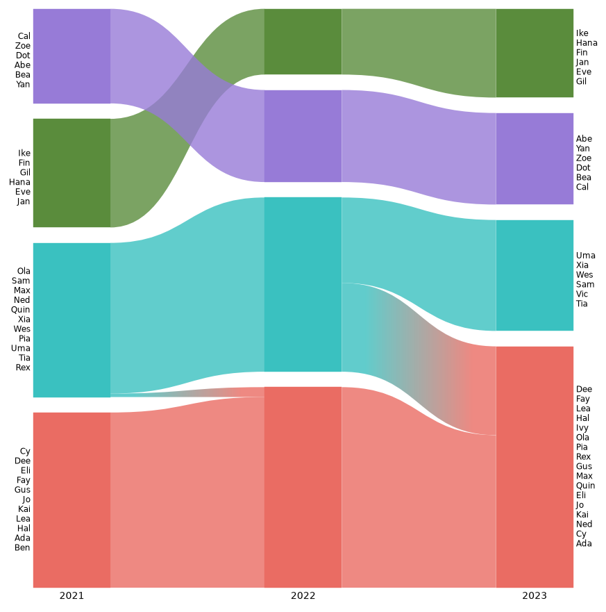
Without ax=, plot makes its own figure at one layout pixel per point (600 pt high by default). For anything you
publish, give it an axes. The shapes then stretch to fill the axes, while every font size and gap stays in points.
fig, ax = plt.subplots(figsize=(6, 3), layout="constrained")
alluvial.plot([im_a, im_b, im_c], ax=ax, names=YEARS);
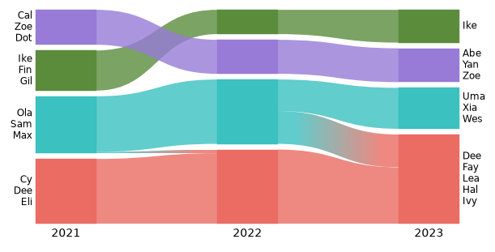
Colours#
colors= picks how modules are coloured. Every option is an operation of the web app:
"similarity"(the default) gives matching modules in neighbouring networks the same colour,"module_id"colours by Infomap’s module number,"nodes"colours every node by its module in the first network, so you can see where each module goes, andNoneleaves everything gray.
palette= takes a list of colours or a matplotlib colormap, for example palette="tab10".
fig, axs = plt.subplots(2, 2, figsize=(7, 4), layout="constrained")
for ax, colors in zip(axs.flat, ["similarity", "module_id", "nodes", None]):
alluvial.plot([im_a, im_b, im_c], ax=ax, names=YEARS, colors=colors)
ax.set_title(f"colors={colors!r}", fontsize="medium")
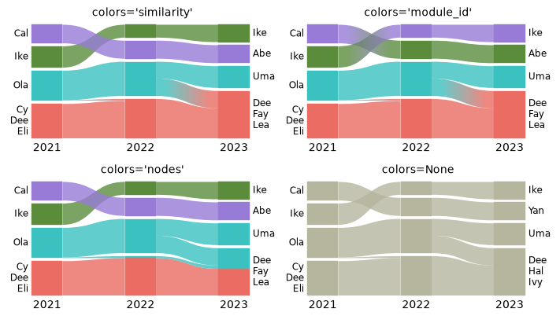
Sub-modules#
Infomap finds a hierarchy of modules: here, departments with teams inside. module_level=2 opens every module that
has sub-modules (the same as clicking it in the web app). Pass one level per network to open only some of them, for
example module_level=[2, 1, 1]. Gray boxes behind the sub-modules mark their parent module, as in the web app.
hierarchy="outline" draws dotted boxes around the parents instead, and hierarchy=False draws nothing.
Sub-modules are coloured like any other module. The similarity colouring pairs modules one at a time, as the web app
does, and a module it cannot pair stays gray (one sub-module of 2023 below). colors="nodes" colours every module.
fig, axs = plt.subplots(1, 2, figsize=(8, 3), layout="constrained")
alluvial.plot([im_a, im_b, im_c], ax=axs[0], names=YEARS, module_level=2)
alluvial.plot([im_a, im_b, im_c], ax=axs[1], names=YEARS, module_level=2, hierarchy="outline")
axs[0].set_title("module_level=2", fontsize="medium")
axs[1].set_title('hierarchy="outline"', fontsize="medium");
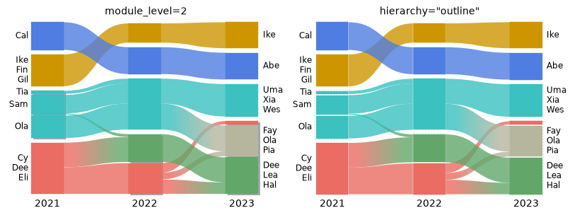
expand=[(network, module_id), ...] opens single modules instead. network is an index (or a network id), and
module_id is a module path such as "1" or "1:2". Here we open module 2 of 2021 only, the department whose
two teams Infomap tells apart. Expanding a module without sub-modules raises ValueError.
fig, ax = plt.subplots(figsize=(6, 3), layout="constrained")
alluvial.plot([im_a, im_b, im_c], ax=ax, names=YEARS, expand=[(0, "2")]);
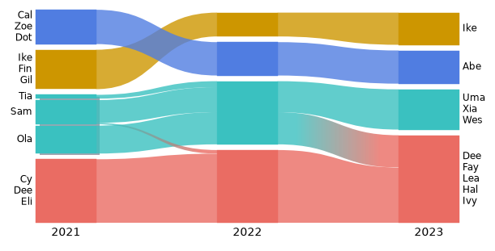
Highlighting groups of nodes#
highlight= colours chosen nodes wherever they go and leaves the rest gray. It takes {label: node ids}, and
legend=True adds a legend. The label lines take the colour of their node. Here we follow two teams.
teams = {"Ada's team": TEAMS[0], "Max's team": TEAMS[2]} # node ids
fig, ax = plt.subplots(figsize=(6, 3.2), layout="constrained")
alluvial.plot([im_a, im_b, im_c], ax=ax, names=YEARS, highlight=teams, legend=True);
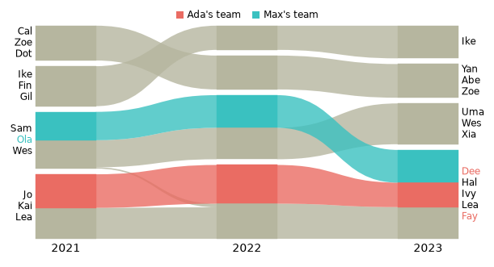
With identifier="name", nodes are matched by name, and highlight takes names too. highlight also accepts a
function that gets an alluvial.NodeInfo (network, id, name, flow, module path, metadata) and returns a label or
None. alluvial.legend(ax, ...) replaces the legend and takes the keywords of Axes.legend. other= adds an
entry for the gray nodes.
def first_letter(node):
return "A–F" if node.name[0] <= "F" else None
fig, ax = plt.subplots(figsize=(6, 3.2), layout="constrained")
alluvial.plot(
[im_a, im_b, im_c],
ax=ax,
names=YEARS,
identifier="name",
highlight=first_letter,
highlight_colors=["tab:orange"],
)
alluvial.legend(ax, other="others", title="name starts with", ncols=2);
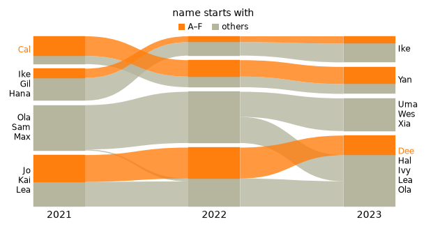
State networks: multilayer and memory#
The three years can also be one multilayer network, with one layer per year. A single Infomap run then finds
modules that span the years. A multilayer network is a state network: each person has one state node per layer.
alluvial reads the state nodes and labels them by their physical names. split_layers=True draws one network per
layer and matches the layers by physical node, as the web app’s “split layers” does.
ml = infomap.Infomap(seed=42, num_trials=10, silent=True) # relax rate: Infomap's default, 0.15
ml.set_names(dict(enumerate(NAMES)))
for layer, year in enumerate(YEARS, start=1):
for u, v in links[year]:
ml.add_multilayer_intra_link(layer, u, v)
ml.run()
top_modules = {node.path.split(":")[0] for node in alluvial.read(ml).nodes}
print(f"{len(top_modules)} modules across {len(YEARS)} layers")
fig, axs = plt.subplots(1, 2, figsize=(8, 3), layout="constrained", width_ratios=[1, 2.2])
alluvial.plot([ml], ax=axs[0], names=["all years"])
alluvial.plot([ml], ax=axs[1], split_layers=True, names=YEARS)
axs[1].set_title("split_layers=True", fontsize="medium");
5 modules across 3 layers
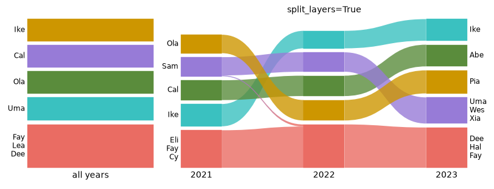
Memory (higher-order) networks work the same way. Their nodes are state nodes too.
Matching state networks with each other needs care. With the default identifier="id", state nodes are matched by
state id. That is right only if the state ids mean the same thing in every network. Use identifier="name" to match
by physical node name instead. Do not mix state networks and ordinary networks under identifier="id": a state id
would be compared with a node id. alluvial warns when you do.
Reading Infomap output files#
Infomap’s output files work as inputs: .tree, .ftree, .clu, the state versions .stree/*_states.tree, and
-o json. The format comes from the suffix. The default network name is the file name. Below we write the three
runs from Python, which gives the same files as the command line infomap net.net out/ -o tree,ftree,json.
from pathlib import Path
out = Path("tutorial_output")
out.mkdir(exist_ok=True)
for year, im in zip(YEARS, (im_a, im_b, im_c)):
im.write_flow_tree(str(out / f"team_{year}.ftree"))
paths = [out / f"team_{year}.ftree" for year in YEARS]
fig, ax = plt.subplots(figsize=(6, 3), layout="constrained")
alluvial.plot(paths, ax=ax);
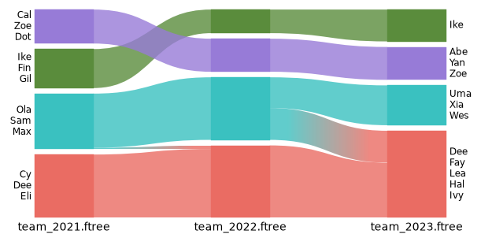
alluvial.read returns the parsed NetworkFile, which is useful for checking what was read. alluvial.layout
returns the geometry without drawing it: every module’s position, flow and label, in a frozen dataclass.
nf = alluvial.read(paths[0])
print(nf.name, nf.format, len(nf.nodes), "nodes, codelength", nf.codelength)
node = nf.nodes[0]
print(f"first node: {node.name!r}, module path {node.path}, flow {node.flow}")
geom = alluvial.layout(paths, names=YEARS)
for module in geom.networks[0].modules:
print(f"module {module.id}: flow {module.flow:.3f}, label {module.largest_leaf_names}")
team_2021.ftree ftree 36 nodes, codelength 3.61403
first node: 'Cy', module path 1:1, flow 0.0328947
module 1: flow 0.329, label ('Cy', 'Dee', 'Eli', 'Fay', 'Gus', 'Jo', 'Kai', 'Lea', 'Hal', 'Ada', 'Ben')
module 2: flow 0.289, label ('Ola', 'Sam', 'Max', 'Ned', 'Quin', 'Xia', 'Wes', 'Pia', 'Uma', 'Tia', 'Rex')
module 3: flow 0.204, label ('Ike', 'Fin', 'Gil', 'Hana', 'Eve', 'Jan')
module 4: flow 0.178, label ('Cal', 'Zoe', 'Dot', 'Abe', 'Bea', 'Yan')
Naming and ordering modules#
For a figure you usually want named modules in a fixed order. module_names replaces a module’s node-name label
by your own name, and module_order stacks modules bottom to top. Both refer to modules by network and module id.
A network is its index (0, 1, …), its network id, or the name given with names= (as a string). A module id is a string,
"3", or "3:1" after module_level=2 or expand. Get the ids from a plain layout first:
geometry = alluvial.layout([im_a, im_b, im_c], names=YEARS)
for network in geometry.networks:
print(network.index, network.id, network.name, [module.id for module in network.modules])
0 net0 2021 ['1', '2', '3', '4']
1 net1 2022 ['1', '2', '3', '4']
2 net2 2023 ['1', '2', '3', '4']
Module ids are per network: module "1" of 2021 and module "1" of 2022 are unrelated. To name the same
group consistently across years, pass a callable. It gets a ModuleInfo for every module (node_names,
flow, id, network_index, …) and returns a name, or None to keep the node names. Here a module is named
after the teams with at least four of their six members in it.
module_order={network: [module_id, ...]} lists modules bottom to top. ... stands for the modules you do not
list, which keep their order, so [m, ...] puts module m at the bottom and [..., m] at the top. Below, the
module with Ada is at the bottom in every year, and each network gets its own id from Infomap’s partition.
LEADERS = {NAMES[team[0]]: team for team in TEAMS} # each team by its first member
def team_name(module):
"Name a module after the teams that have at least four of their members in it."
members = set(module.node_names)
teams = [leader for leader, team in LEADERS.items() if sum(NAMES[u] in members for u in team) >= 4]
return " + ".join(teams) or None
def module_of(im, name):
"The top module of the node with this name."
node = next(node for node in alluvial.read(im).nodes if node.name == name)
return node.path.split(":")[0]
ims = [im_a, im_b, im_c]
ada_at_bottom = {i: [module_of(im, "Ada"), ...] for i, im in enumerate(ims)}
print(ada_at_bottom)
fig, ax = plt.subplots(figsize=(6, 3), layout="constrained")
alluvial.plot(ims, ax=ax, names=YEARS, module_names=team_name, module_order=ada_at_bottom);
{0: ['1', Ellipsis], 1: ['1', Ellipsis], 2: ['1', Ellipsis]}
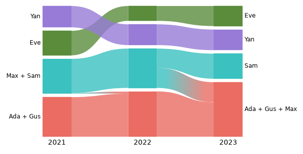
Some things to know:
Names are drawn as labels on the first and last network only, as in the web app. Names of middle networks are kept (
ModuleGeometry.name) but not drawn.Only visible modules can be ordered. A module below
flow_thresholdraises an error.module_orderreorders all listed modules with one layout, so it stays fast with hundreds of sub-modules. “Move up/down” in the web app gives the same order.save_diagramstores the names and the custom order, andlayoutof the saved files restores them.
Wrong ids raise an error that says what is wrong:
mistakes = {
"a year as an int (an int is an index)": dict(module_order={2021: ["1"]}),
"a module id as an int": dict(module_order={0: [1]}),
"a top module after module_level=2": dict(module_level=2, module_names={(0, "2"): "Department"}),
"a hidden module": dict(flow_threshold=0.19, module_order={0: ["4"]}),
}
for what, kwargs in mistakes.items():
try:
alluvial.layout(ims, names=YEARS, **kwargs)
except (TypeError, ValueError) as error:
print(f"{what}:\n {type(error).__name__}: {error}")
a year as an int (an int is an index):
ValueError: module_order: no network 2021 (the diagram has 3 networks; to refer to the network named '2021', pass the string '2021')
a module id as an int:
TypeError: module_order[0]: module ids are strings like '1' or '1:2' (or ...), got 1
a top module after module_level=2:
ValueError: module_names: no module '2' in network 'net0' (it is already expanded: its sub-modules are shown)
a hidden module:
ValueError: module_order: module '4' in network 'net0' is not shown (its flow is below the flow threshold, or zero); only visible modules can be placed
A figure for a paper#
Set your paper’s font in rcParams; every font size in the diagram follows font.size. Pass your own axes, use
layout="constrained", and save as PDF. Labels and limits are fitted again whenever the figure is drawn, so text
keeps its point size and stays inside each panel. Long names are cut with an ellipsis, and a label that would
collide with its neighbour loses lines.
with plt.rc_context({"font.family": "serif", "font.size": 8, "pdf.fonttype": 42}):
fig, (a, b) = plt.subplots(1, 2, figsize=(7, 2.4), layout="constrained")
alluvial.plot([im_a, im_b, im_c], ax=a, names=YEARS, max_label_lines=3)
alluvial.plot([ml], ax=b, split_layers=True, names=YEARS, colors="nodes", palette="tab10")
a.set_title("(a) one Infomap run per year", loc="left")
b.set_title("(b) one multilayer run", loc="left")
fig.savefig(out / "figure.pdf")
fig.savefig(out / "figure.png", dpi=300)
print(f"figure.pdf: {(out / 'figure.pdf').stat().st_size / 1024:.0f} KiB")
figure.pdf: 18 KiB
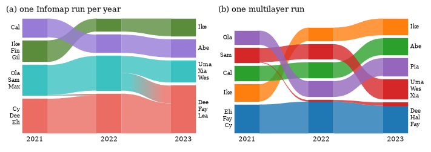
The PDF stays vector. A streamline between two colours is a small gradient image clipped to its outline, and
gradient=False makes it a single colour. rasterized=True rasterizes only the shapes of a very large diagram and
keeps the text as vector.
Tweaking artists#
plot and draw return the axes. alluvial.get_artists(ax) returns the matplotlib artists they created, for any
change the keyword arguments do not cover. Every artist has a gid (module:<network>:<module>:<group>,
streamline:<id>, …), and SVG output keeps it as the element id.
fig, ax = plt.subplots(figsize=(6, 3), layout="constrained")
alluvial.plot([im_a, im_b, im_c], ax=ax, names=YEARS, streamline_kw={"alpha": 0.5})
art = alluvial.get_artists(ax)
print(len(art.modules), "module rectangles,", len(art.streamlines), "streamlines")
for text in art.network_labels:
text.set_fontweight("bold")
for rect in art.modules:
if rect.get_gid().startswith(
"module:net1:"
): # the middle network (Infomap objects get ids net0, net1, ...)
rect.set(
hatch="///", edgecolor="white"
) # hatches take the edge colour, which is the face colour by default
12 module rectangles, 10 streamlines
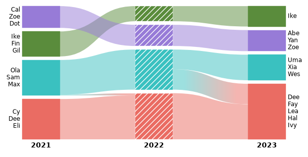
Open in the web app#
alluvial.save_diagram takes the same arguments as layout and saves the diagram for the
web app, where you can fine-tune it by hand: move and name modules, recolour,
change the layout. It writes the web app’s “Download diagram” format, one Infomap JSON file per network in a .zip (or loose files
with loose=True): drop the zip on the web app’s load dialog. The files keep the networks, their names, the colours,
the expanded modules, the layout options, the colour scheme, module names and custom module orders.
alluvial.read loads the .zip back as one network per file, and layout/plot restore the diagram from them.
(The 2019 saved-diagram format, one .json with all networks, is no longer supported.)
kwargs = dict(names=YEARS, module_level=2)
alluvial.save_diagram([im_a, im_b, im_c], out / "teams.zip", **kwargs)
saved = alluvial.read(out / "teams.zip")
print([nf.name for nf in saved], "palette", saved[0].colors[:3])
fig, ax = plt.subplots(figsize=(6, 3), layout="constrained")
alluvial.plot(saved, ax=ax);
['2021', '2022', '2023'] palette ['#ea6c63', '#3ac1c0', '#cd9600']
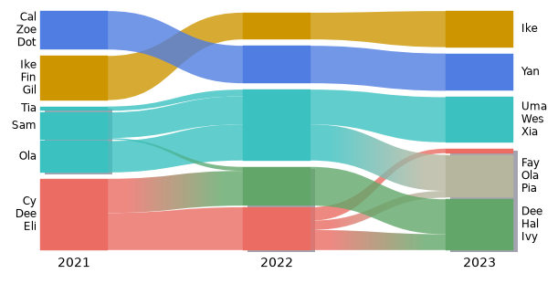
Common mistakes#
alluvial raises or warns where a diagram would silently be wrong:
an Infomap object that has not run raises
ValueError: ... call im.run() first,a missing file raises
FileNotFoundError,highlightidentifiers that match no node, and amodule_leveldeeper than a network’s module tree, give a warning.
import warnings
with warnings.catch_warnings(record=True) as caught:
warnings.simplefilter("always")
alluvial.layout([im_a, im_b], highlight={"typo": ["Adaa"]}, identifier="name")
alluvial.layout([im_a, im_b], module_level=4)
for w in caught:
print("warning:", w.message)
warning: highlight: 1 of 1 identifiers match no node in any network (e.g. 'Adaa')
warning: module_level is deeper than the module tree of 'network 0' (module_level 4, deepest level 2), 'network 1' (module_level 4, deepest level 2); their deepest modules are shown
Next steps#
help(alluvial.layout)andhelp(alluvial.draw)list every option. The layout options (height,module_width,flow_threshold,sort_modules_by, …) are the web app’s.The package README has more examples, including Infomap output files with longer node names.